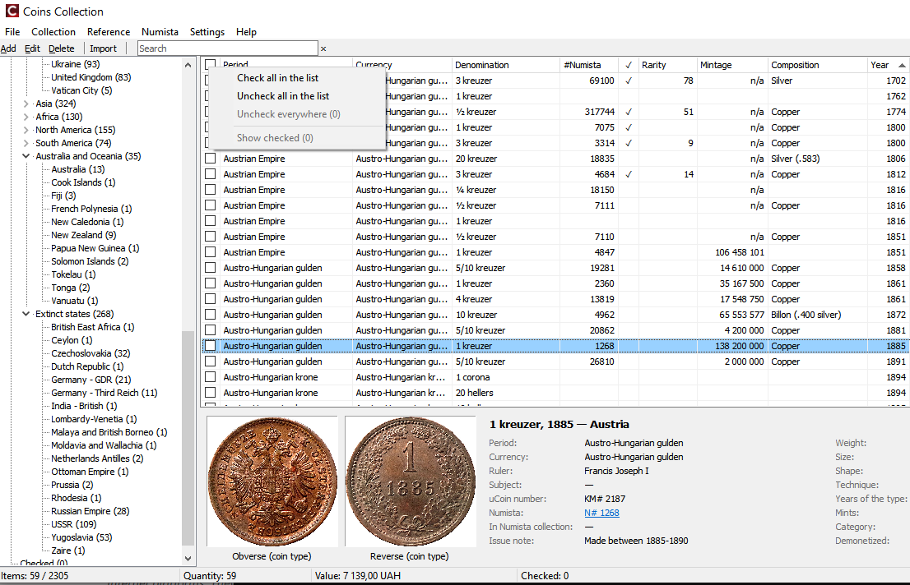

Checking coins

Mass Numista operations (auto-link, upload, update catalogue data, rarity index) work with checked items. Checks are kept for the whole collection, also when you switch to another country.
- Click the check box in a row, or press Space.
- Click the check box in the column header — check / uncheck all items of the current list.
- Right-click the check box column header: Check all in the list, Uncheck all in the list, Uncheck everywhere (whole collection), Show checked.
Checks outside the current list
If some checked items are not in the current list (another country, search), the status bar shows
Checked: 14 (outside the list: 3). Open Checked in the tree to see all of them.
Delete checked
Collection → Delete checked... (also in the context menu) deletes all checked items — for example the whole
swap list: For swap → the check box in the column header → Delete checked....
A coin without other items is deleted with its photos; a coin that still has items (for example in the collection) stays.
A backup copy of the database is made first (Db\<database>.before-delete-<time>.bak).
If some of the items are uploaded to Numista, the program asks: Yes — delete them on Numista too (one request per item), No — keep them on Numista, Cancel — delete nothing.